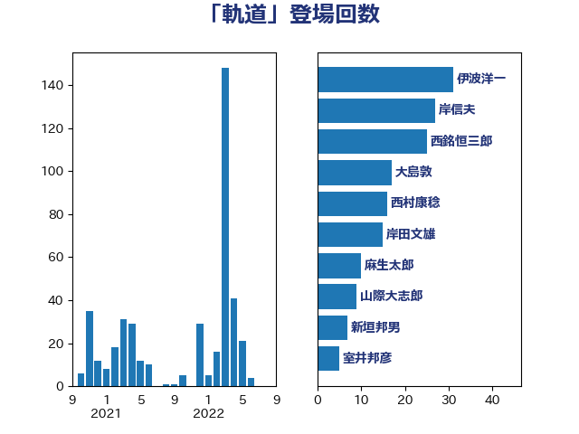

単語「軌道」

| 伊波洋一 | 無所属 | 31 回 |
| 岸信夫 | 自由民主党 | 27 回 |
| 西銘恒三郎 | 自由民主党 | 25 回 |
| 大島敦 | 立憲民主党 | 17 回 |
| 西村康稔 | 自由民主党 | 16 回 |
| 岸田文雄 | 自由民主党 | 15 回 |
| 麻生太郎 | 自由民主党 | 10 回 |
| 山際大志郎 | 自由民主党 | 9 回 |
| 新垣邦男 | 立憲民主党 | 7 回 |
| 室井邦彦 | 日本維新の会 | 5 回 |
| 浜地雅一 | 公明党 | 5 回 |
| 萩生田光一 | 自由民主党 | 5 回 |
| 今井絵理子 | 自由民主党 | 4 回 |
| 勝部賢志 | 立憲民主党 | 4 回 |
| 大塚耕平 | 国民民主党 | 4 回 |
| 斉藤鉄夫 | 公明党 | 4 回 |
| 玄葉光一郎 | 立憲民主党 | 4 回 |
| 菅義偉 | 自由民主党 | 4 回 |
| 赤嶺政賢 | 日本共産党 | 4 回 |
| 上田清司 | 国民民主党 | 3 回 |
| 梶山弘志 | 自由民主党 | 3 回 |
| 河野太郎 | 自由民主党 | 3 回 |
| 浅田均 | 日本維新の会 | 3 回 |
| 石井苗子 | 日本維新の会 | 3 回 |
| 稲津久 | 公明党 | 3 回 |
| 茂木敏充 | 自由民主党 | 3 回 |
| 赤澤亮正 | 自由民主党 | 3 回 |
| 鈴木宗男 | 日本維新の会 | 3 回 |
| 鬼木誠 | 立憲民主党 | 3 回 |
| 中西健治 | 自由民主党 | 2 回 |
| 井上信治 | 自由民主党 | 2 回 |
| 井上哲士 | 日本共産党 | 2 回 |
| 伊藤孝江 | 公明党 | 2 回 |
| 伊藤渉 | 公明党 | 2 回 |
| 和田義明 | 自由民主党 | 2 回 |
| 奥野総一郎 | 立憲民主党 | 2 回 |
| 尾身朝子 | 自由民主党 | 2 回 |
| 山口壯 | 自由民主党 | 2 回 |
| 山口那津男 | 公明党 | 2 回 |
| 岡田克也 | 立憲民主党 | 2 回 |
| 柳ヶ瀬裕文 | 日本維新の会 | 2 回 |
| 柿沢未途 | 無所属 | 2 回 |
| 牧山ひろえ | 立憲民主党 | 2 回 |
| 石橋通宏 | 立憲民主党 | 2 回 |
| 藤田文武 | 日本維新の会 | 2 回 |
| 足立康史 | 日本維新の会 | 2 回 |
| 進藤金日子 | 自由民主党 | 2 回 |
| 金子恵美 | 立憲民主党 | 2 回 |
| 鈴木俊一 | 自由民主党 | 2 回 |
| 音喜多駿 | 日本維新の会 | 2 回 |
| 須藤元気 | 無所属 | 2 回 |
| 馬場伸幸 | 日本維新の会 | 2 回 |
| 高市早苗 | 自由民主党 | 2 回 |
| 黄川田仁志 | 自由民主党 | 2 回 |
| こやり隆史 | 自由民主党 | 1 回 |
| たがや亮 | れいわ新選組 | 1 回 |
| ながえ孝子 | 無所属 | 1 回 |
| 三原じゅん子 | 自由民主党 | 1 回 |
| 三浦信祐 | 公明党 | 1 回 |
| 亀岡偉民 | 自由民主党 | 1 回 |
| 井上英孝 | 日本維新の会 | 1 回 |
| 伊藤俊輔 | 立憲民主党 | 1 回 |
| 住吉寛紀 | 日本維新の会 | 1 回 |
| 佐藤英道 | 公明党 | 1 回 |
| 古屋範子 | 公明党 | 1 回 |
| 吉川元 | 立憲民主党 | 1 回 |
| 国光あやの | 自由民主党 | 1 回 |
| 國場幸之助 | 自由民主党 | 1 回 |
| 堀井巌 | 自由民主党 | 1 回 |
| 宗清皇一 | 自由民主党 | 1 回 |
| 宮澤博行 | 自由民主党 | 1 回 |
| 寺田学 | 立憲民主党 | 1 回 |
| 小池晃 | 日本共産党 | 1 回 |
| 山岸一生 | 立憲民主党 | 1 回 |
| 山本博司 | 公明党 | 1 回 |
| 岡本あき子 | 立憲民主党 | 1 回 |
| 岬麻紀 | 日本維新の会 | 1 回 |
| 庄子賢一 | 公明党 | 1 回 |
| 新谷正義 | 自由民主党 | 1 回 |
| 東徹 | 日本維新の会 | 1 回 |
| 林芳正 | 自由民主党 | 1 回 |
| 河野義博 | 公明党 | 1 回 |
| 渡辺創 | 立憲民主党 | 1 回 |
| 渡辺周 | 立憲民主党 | 1 回 |
| 渡辺孝一 | 自由民主党 | 1 回 |
| 湯原俊二 | 立憲民主党 | 1 回 |
| 片山さつき | 自由民主党 | 1 回 |
| 片山大介 | 日本維新の会 | 1 回 |
| 牧義夫 | 立憲民主党 | 1 回 |
| 玉木雄一郎 | 国民民主党 | 1 回 |
| 石川博崇 | 公明党 | 1 回 |
| 石川昭政 | 自由民主党 | 1 回 |
| 磯崎仁彦 | 自由民主党 | 1 回 |
| 福山哲郎 | 立憲民主党 | 1 回 |
| 福島伸享 | 無所属 | 1 回 |
| 稲富修二 | 立憲民主党 | 1 回 |
| 稲田朋美 | 自由民主党 | 1 回 |
| 笠井亮 | 日本共産党 | 1 回 |
| 篠原豪 | 立憲民主党 | 1 回 |
| 紙智子 | 日本共産党 | 1 回 |
| 落合貴之 | 立憲民主党 | 1 回 |
| 藤岡隆雄 | 立憲民主党 | 1 回 |
| 西田昌司 | 自由民主党 | 1 回 |
| 谷田川元 | 立憲民主党 | 1 回 |
| 赤木正幸 | 日本維新の会 | 1 回 |
| 里見隆治 | 公明党 | 1 回 |
| 野田国義 | 立憲民主党 | 1 回 |
| 野田聖子 | 自由民主党 | 1 回 |
| 長浜博行 | 無所属 | 1 回 |
| 長谷川岳 | 自由民主党 | 1 回 |
| 阿部司 | 日本維新の会 | 1 回 |
| 阿部弘樹 | 日本維新の会 | 1 回 |
| 青木一彦 | 自由民主党 | 1 回 |
| 青柳仁士 | 日本維新の会 | 1 回 |
| 高木かおり | 日本維新の会 | 1 回 |
| 鳩山二郎 | 自由民主党 | 1 回 |